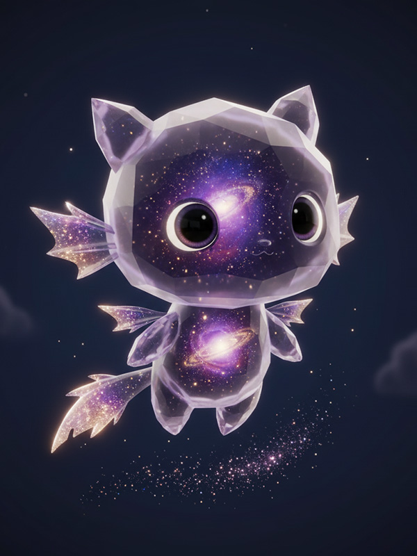

它没有语言，但你能听懂它的每一次闪烁，如同听见自己灵魂的回响。
物种解读
宇宙信息的回响
星灵并非血肉生物，而是宇宙中无处不在的数据流和星辰碎片，因某种契机（如强烈的精神力波动）而凝聚成的能量生命体。它们没有固定形态，通常呈现为一团柔和的光晕或流动的光带。星灵会被拥有强大精神力或特殊血脉的人吸引，并与之形成“共生”关系，成为宿主的“第二个灵魂”。


情感的共鸣者
星灵无法独立思考，但能完美地感知并放大宿主的情绪。当宿主快乐时，它会发出明亮温暖的光；当宿主悲伤或愤怒时，它的光芒会变得黯淡或狂暴。在《驹隙万秋》中，一只星灵被羽菱萱与生俱来的“数字风暴”亲和力所吸引，成为了她最亲密的伙伴。它不仅是羽菱萱情绪的“晴雨表”，更能在关键时刻，帮助她链接和解析更深层次的数据信息。